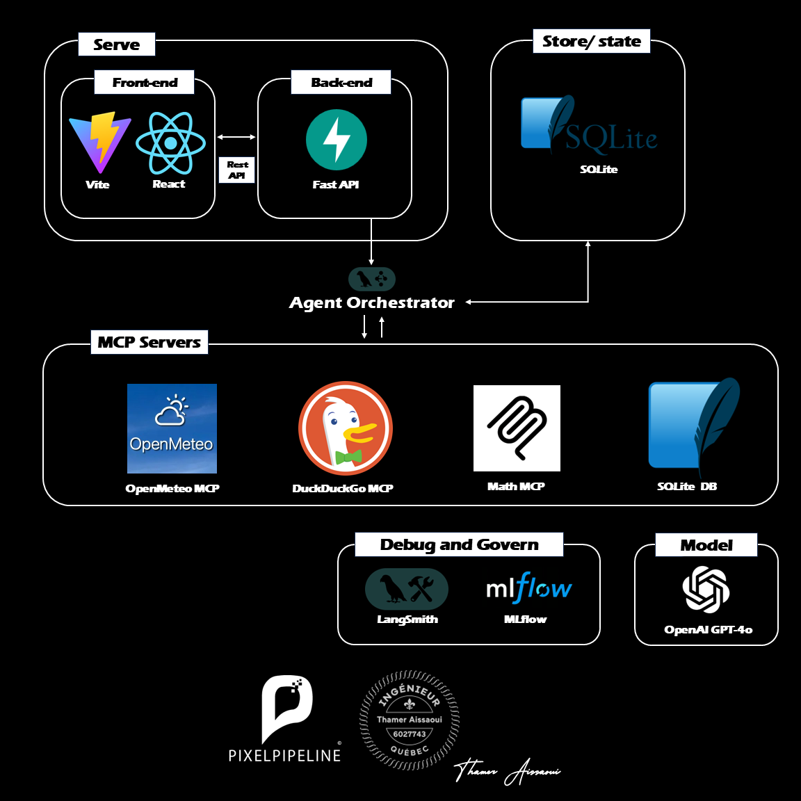
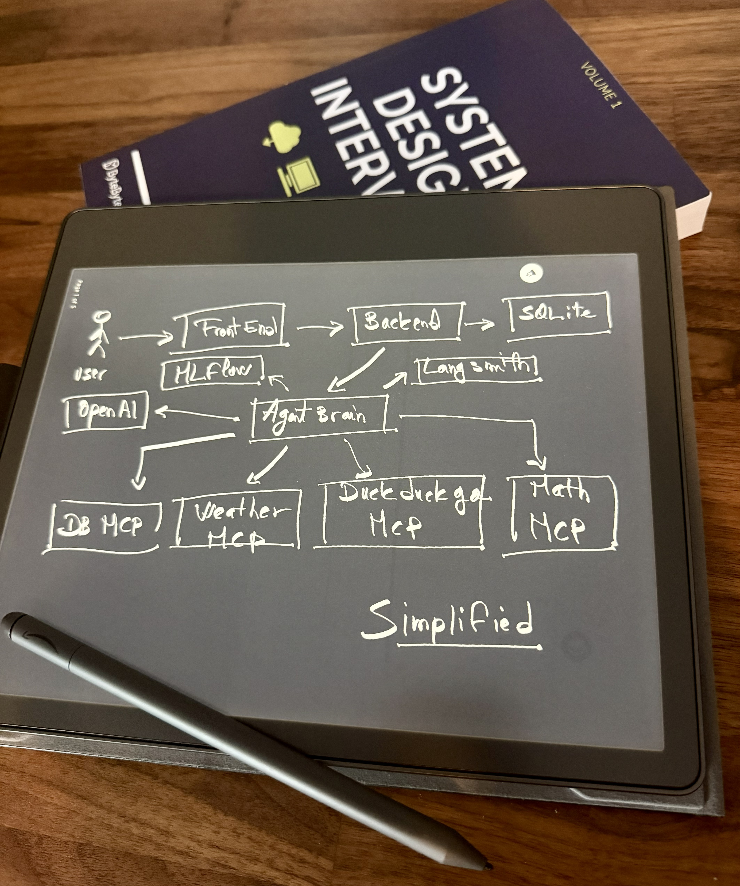
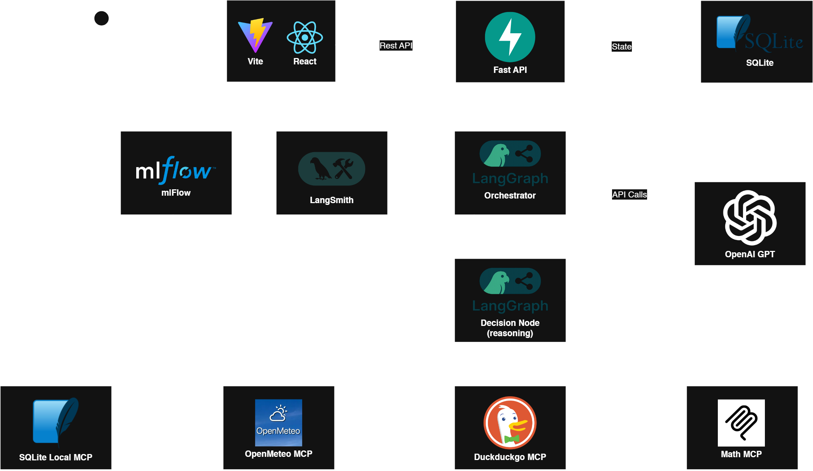
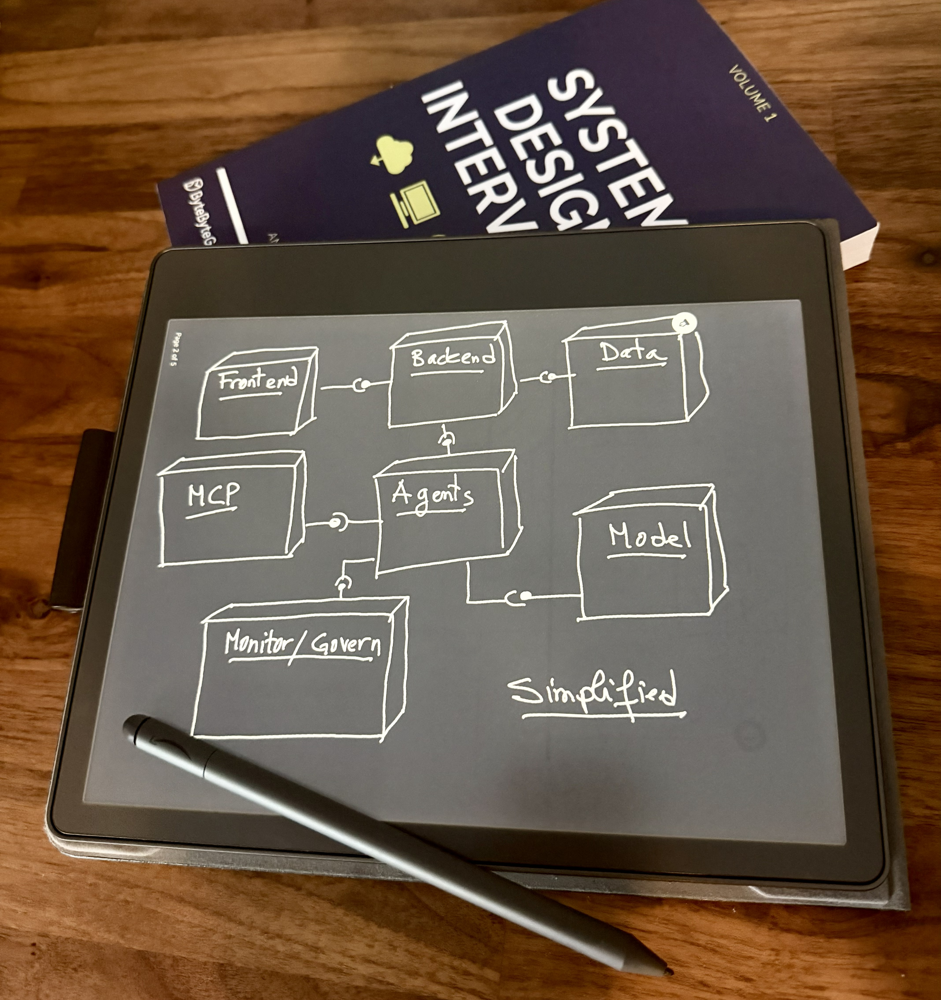
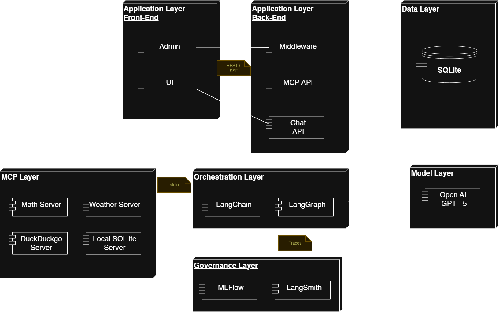
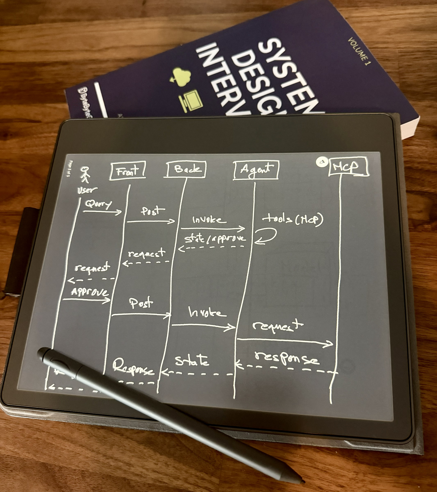
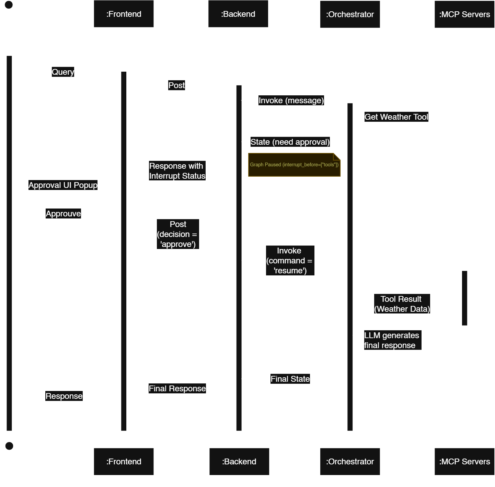

MCP LangGraph Agentic
The Problem, The Pain Point
Modern AI applications often struggle to securely connect to diverse external data sources and tools without writing brittle, custom integration code. There is a need for a standardized protocol to build agentic workflows that can seamlessly and securely access local and remote capabilities.
The Solution, The Process
This project demonstrates a powerful, modern architecture leveraging the Model Context Protocol (MCP) to dynamically connect a LangGraph-powered reasoning agent to various tools. It implements a React frontend, FastAPI backend, and multiple standalone MCP servers (Math, Weather, Search, Database) communicating via standard input/output.
The Results, The Business Value
The project successfully highlights how agentic AI can be structured in a modular, scalable way.
- Standardized Tooling: Utilizing MCP to separate tool logic from the core reasoning engine, allowing tools to be written in any language and dynamically registered.
- Human-in-the-Loop Oversight: The LangGraph orchestrator proactively pauses execution before interacting with external tools, emitting an interrupt event to require explicit user approval.
- Streaming Capabilities: Real-time SSE streaming delivers the agent's thought process and tool execution visibility character-by-character to the custom-built React frontend.
- Observability: Fully integrated with MLflow via autologging. Every LLM prompt, parameter, and tool invocation trace is securely logged for deep analysis.

Video Demonstration
The Architecture: The MCP Approach
The system utilizes an explicit, graph-based routing system with LangGraph, where tools are connected via standard I/O streams using the Model Context Protocol.
The Frontend (Vite + React)
A lightweight, high-performance React application featuring a custom-built premium aesthetic with glassmorphism and micro-animations. It consumes Server-Sent Events (SSE) from the backend to stream responses and parse tool-call visibility.
The Backend API (FastAPI)
A fully asynchronous FastAPI layer that exposes a /chat endpoint,
efficiently handling multiple streams and long-running tool queries while coordinating
with LangGraph.
The Brain (LangGraph & LangChain)
Uses create_react_agent to loop between reasoning (LLM) and acting. It
utilizes AsyncSqliteSaver for conversational memory and handles
Human-in-the-Loop interruptions.
The MCP Servers (Tools)
Tools are dynamically registered via a JSON configuration and spawned as child processes. Servers include Math (arithmetic), Weather (OpenMeteo REST API), Search (DuckDuckGo), and Database (local SQLite queries).
Resilient Error Handling
Gracefully manages workflow interruptions, rejected tool actions, and dynamic connection failures without crashing.
The Engineering
Architectural Pattern: Layered Architecture (N-tier)
The system is built on a clean Layered Architecture (N-tier), ensuring separation of concerns:
- Presentation Layer: React UI with SSE streaming and tool visibility.
- Orchestration Layer: FastAPI and LangGraph Engine with LLM integration.
- MCP Layer: Multi-Server Client communicating over stdio to isolated tool servers.
- Tracking Layer: MLflow Server for comprehensive observability.
Functional Requirements
- Dynamic Tools: Connect and parse responses from multiple MCP servers seamlessly.
- State Persistence: Remember conversation history across multiple turns using SQLite checkpointers.
- Action Pausing: Pause execution on tool requests for Human-in-the-Loop approval.
- Live Streaming: Stream tokens to the frontend in real-time.
Non-Functional Requirements
- Performance: Asynchronous communication and streaming responses.
- Security: Tool interactions require explicit user approval.
- Usability: Premium frontend design with transparent tool-call visualizations.
- Observability: Automatic tracking of traces, metrics, and parameters via MLflow.
- Modularity: Easily add or remove MCP servers without altering core logic.
Architecture Diagram


Component Diagram


Sequence Diagram

